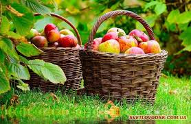
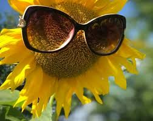
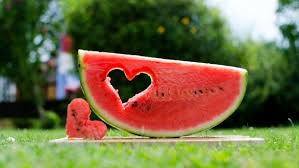

А за вікном останній місяць літа
гуде бджолою, квіткою цвіте.
Нагнулась яблуня вся щедрістю налита,
Відколосилось збіжжя золоте.
Трава шовкова стелеться під ноги,
В небесній синяві лелечий ключ летить.
Пташиний голос сповнений тривоги,
Прощальними акордами дзвенить.
Краса природи, щедрість віковічна,
Серпневий день, струмує ще теплом.
На цій землі все дороге й незвичне.
І хочеться, щоб завжди так було.
Щоб небо хмарку в озері купало,
А на сосні сріблилася роса.
Щоб все цвіло, сміялося, співало
І всіх до себе вабила краса.
Щоб стежечка стелилася під ноги
Стежина, що веде у дивосвіт.
І щоб щасливі всі були дороги,
Серед лісів, серед людей і квіт.
Останній місяць літа догорає
Спекотним днем, то дощиком пройде.
Усе ще літо, але кожен знає,
Що осінь тихо в край до нас іде.